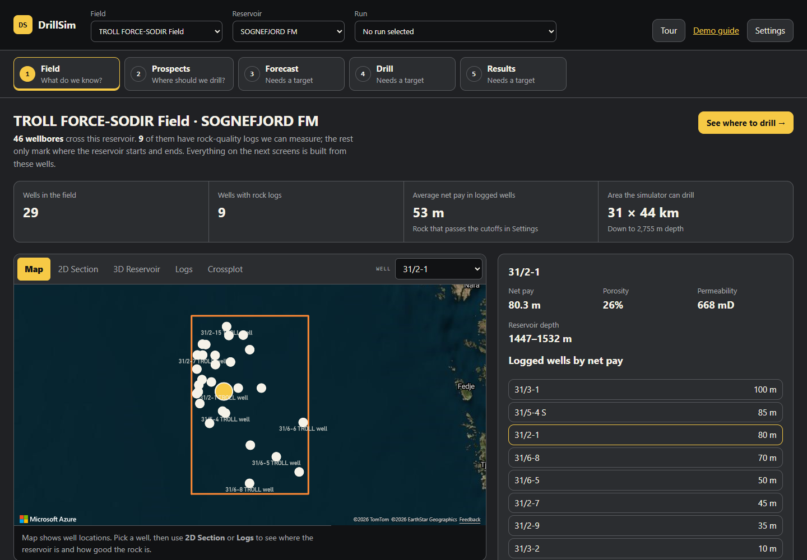
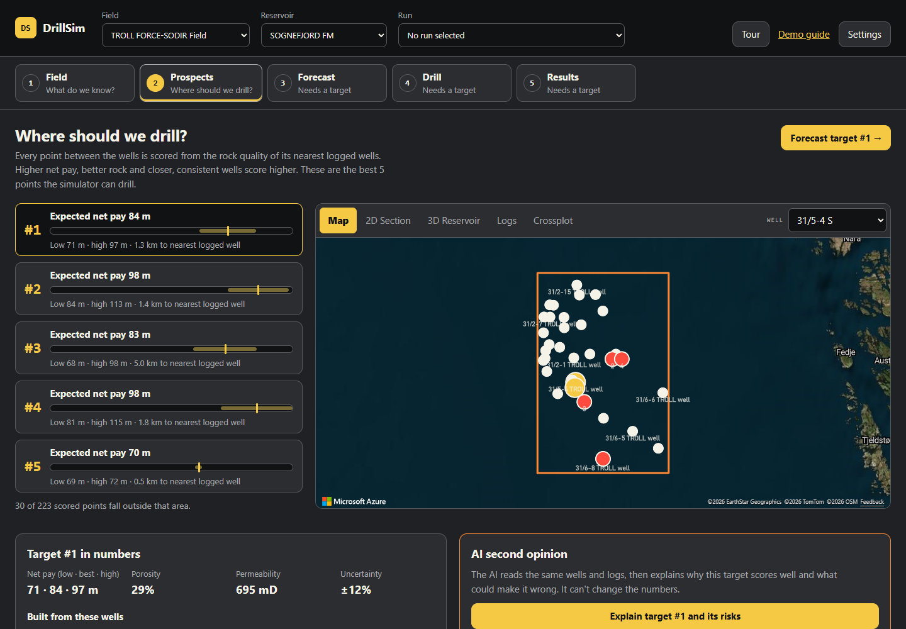
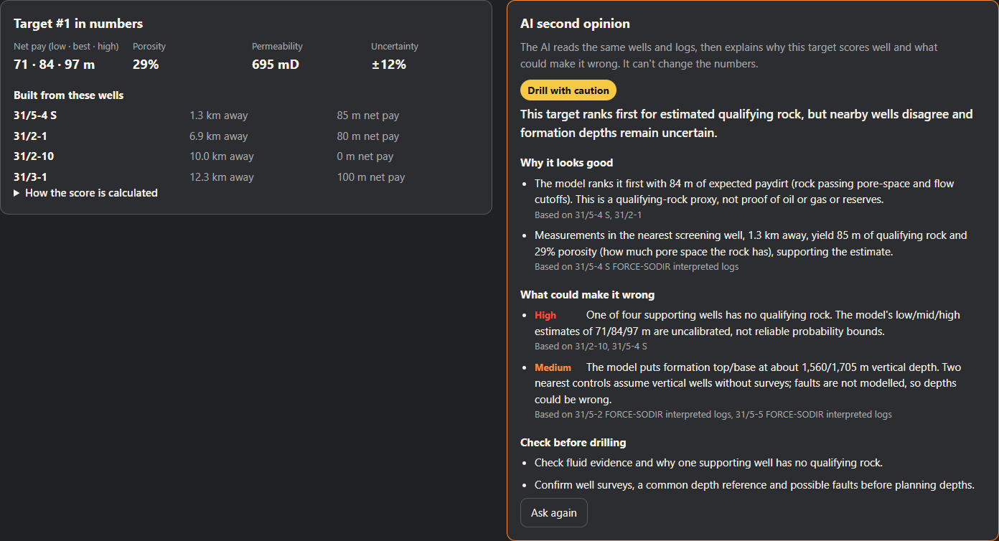
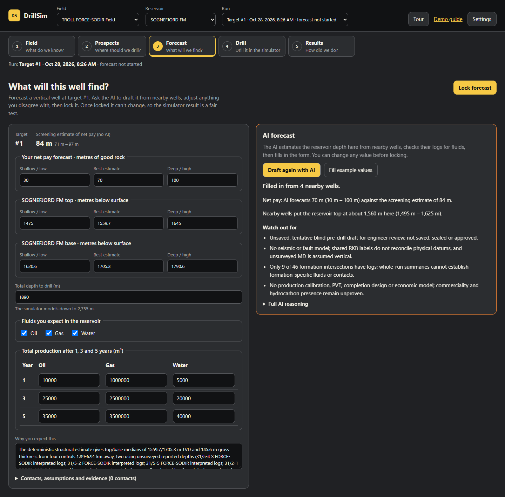
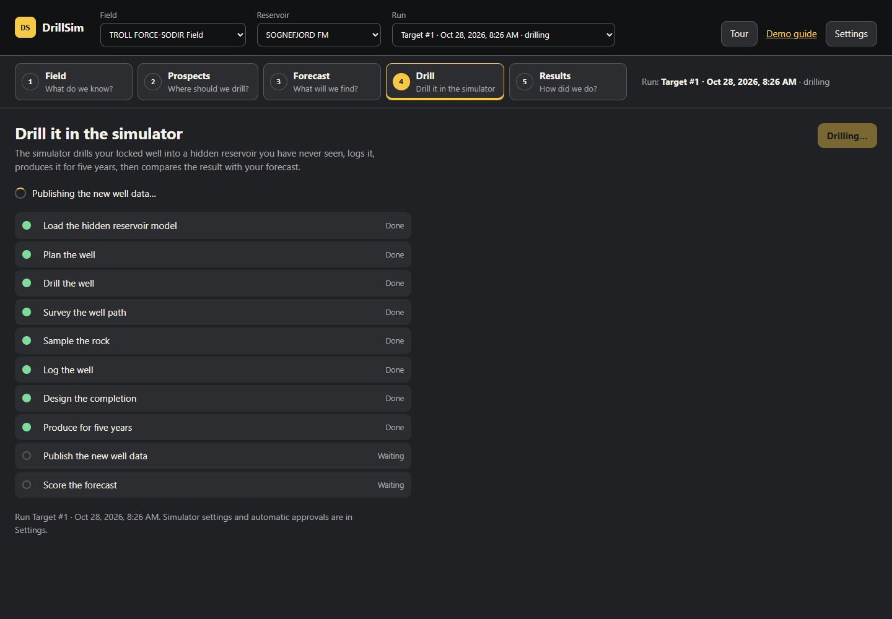
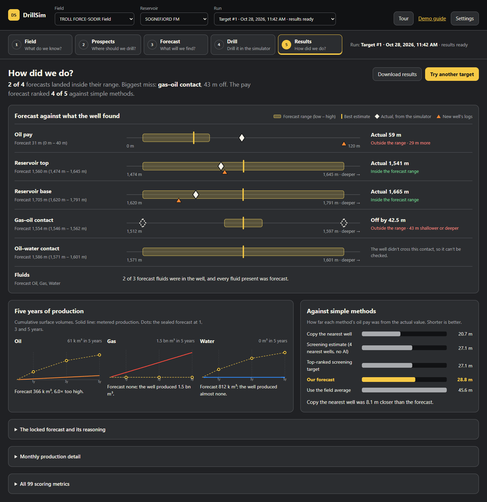
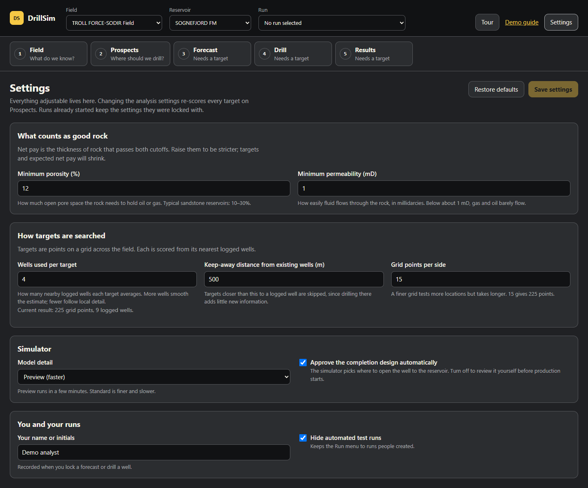

DrillSim demo guide
DrillSim is a synthetic oilfield decision-support demo. It ranks where to drill next from public well data, lets you lock a forecast, then drills that well in a hidden simulated reservoir and scores how close you were.
The one sentence: “DrillSim brings scattered well data together, ranks the best places to drill, and uses AI to explain and draft—then tests the forecast against a reservoir nobody has seen.”
Analytics ranks. AI explains and drafts. The engineer edits and locks the forecast before the simulator samples its hidden reservoir, so the result is a fair test.
Say these up front, and repeat them when asked:
- It is a synthetic demo. The well data is public; the reservoir and results are simulated. Nothing here is a real drilling decision. A customer implementation needs a real geoscientist to check the data, assumptions and method.
- Net pay is a rock-quality proxy. It is the thickness of rock that passes porosity and permeability cutoffs. Water-bearing rock can pass too. It is not reserves.
- P90 / P50 / P10 ranges are uncalibrated. The app shows them as low, best estimate and high.
- The hidden truth stays hidden. The simulator’s reservoir never reaches the browser or the AI. Only scores come back.
- The AI never changes numbers or saves anything. It explains and drafts; the user edits, locks and drills.
GitHub Pages hosts this guide. The app itself runs locally; set it up with Preflight.
Preflight & datasets
Prepare a local copy, load Troll, prepare the simulator model and rehearse once. Run commands from the repository root.
Check your tools
- PowerShell 7 and Git.
- .NET SDK 10.0.400 or a compatible .NET 10 feature band (see
global.json). - Aspire CLI 13.5.3 or newer.
- Node.js 22.12+ or 24 LTS with npm.
- Python 3.10+ for the dataset scripts (standard library only).
- Azure CLI and a development subscription where you can create resources and assign roles, with access and quota for the model. An offline option is below.
git clone https://github.com/seiggy/drillsim.git
Set-Location .\drillsim
dotnet restore .\DrillSim.slnx
npm ci --prefix .\src\DrillSim.AnalysisWeb
aspire certs trustLocal service keys are generated automatically
When the AppHost starts, Aspire generates any missing local service keys and saves them in the AppHost’s .NET user-secrets store. Existing values are reused, and keys survive restarts and data resets.
Which keys Aspire manages
reservoir-simulation-operator-key, drilling-operations-internal-key, drilling-operations-analysis-callback-key and publication-import-key. Each is 64 letters and digits and reaches only the services that need it—never the browser.
Sign in; Aspire sets up Maps and AI
az loginOn the first launch, Aspire asks for any missing tenant, subscription, resource group and location choices, then saves them. Defaults are eastus2 and a resource group beginning with rg-drillsim.
Aspire creates an Azure AI Foundry account with the drillsim-chat deployment, and an Azure Maps account with CORS for http://localhost:5173. Your user gets Cognitive Services OpenAI User and Azure Maps Data Reader; authentication uses Azure CLI, not keys. The default model is gpt-6-astra 2026-09-03, GlobalStandard capacity 100—Aspire cannot grant model access or quota. Provisioning takes minutes and is billable; everything else runs locally.
If you use AzEnv, initialize the profile before both sign-in and startup; Aspire and the Analysis API use that profile’s AZURE_CONFIG_DIR.
Use existing resources or change the model
Complete existing connection settings in the AppHost's user-secrets store are reused. Maps and AI are independent; Aspire creates only what is missing and never changes externally configured resources.
- AI:
Parameters:azure-openai-endpoint(must include/openai/v1/),Parameters:azure-openai-deployment-name,Parameters:azure-openai-subscription-id. - Maps:
Parameters:azure-maps-client-id,Parameters:azure-maps-tenant-id,Parameters:azure-maps-subscription-id.
A partial group stops startup with an explanation. To change the model, set AzureResources:ModelName and AzureResources:ModelVersion together; AzureResources:ModelCapacity sets capacity. The model needs structured responses, the Responses API and function tools.
Run without provisioning Azure resources
dotnet user-secrets set "AzureResources:Provision" "false" --project .\aspire\DrillSim.AppHostWithout Maps and AI, ranking, forecasting, drilling and results still work; use Fill from reservoir model for the forecast. Set the value back to true to provision again.
If Windows account sign-in fails
az config set core.enable_broker_on_windows=false core.login_experience_v2=off
az login --tenant "<tenant-id>" --use-device-codeStart the services
Port 5173 must be free. Launch interactively the first time so you can answer Aspire’s prompts, and leave the terminal open:
aspire run --apphost .\aspire\DrillSim.AppHost\DrillSim.AppHost.csprojWhen Azure provisioning finishes, check readiness from another terminal:
aspire wait analysis-api --timeout 180 --non-interactive
aspire wait analysis-web --timeout 180 --non-interactive
aspire wait drilling-operations --timeout 180 --non-interactive
aspire wait reservoir-simulation --timeout 180 --non-interactive
aspire describe --non-interactiveOpen the app at http://localhost:5173. Later launches can use aspire start to run in the background.
Choose and populate a dataset
Use Troll / Sognefjord for the demo. It combines public FORCE logs with SODIR well and formation records, and it is the only dataset with a prepared simulator model.
| Dataset | Contents | Use |
|---|---|---|
| Troll / Sognefjord | 29 wells, 46 wellbores, nine with rock logs and surveys. | The full five-step demo. |
| FORCE-SODIR 15/9 | Five public wells with logs and picks. | A compact data-joining example. |
| Synthetic Northstar | Six fictional wells. | Works without downloads. |
| KGS / USGS Williston | Locations and formation tops. | Import practice only (no simulator model). |
Download (about 170 MB, cached), stage, then import while Aspire is running:
python .\scripts\fetch_datasets.py check
python .\scripts\fetch_datasets.py fetch --dataset force-2020 --dataset sodir-force-troll
python .\scripts\stage_datasets.py force-sodir-troll
# Inspect the import counts without changing service records.
python .\scripts\load_staged.py .\data\staged\force-sodir-troll\records.jsonl --limit 46 --dry-run
# Import the complete reference set.
python .\scripts\load_staged.py .\data\staged\force-sodir-troll\records.jsonl --limit 46--limit 46 matters: the loader’s default is ten records. Re-running refreshes the same records rather than duplicating wells. Refresh the app; it opens on TROLL FORCE-SODIR and SOGNEFJORD FM automatically.
Populate the other sample datasets
# Entirely synthetic six-well example.
python .\scripts\seed_northstar.py
# Smaller FORCE-SODIR pilot.
python .\scripts\fetch_datasets.py fetch --dataset force-2020 --dataset sodir-force-15-9
python .\scripts\stage_datasets.py force-sodir-15-9
python .\scripts\load_staged.py .\data\staged\force-sodir-15-9\records.jsonl --limit 5
# Location and formation-top examples.
python .\scripts\fetch_datasets.py fetch --dataset kgs --dataset usgs-williston
python .\scripts\stage_datasets.py kgs --limit 250
python .\scripts\stage_datasets.py usgs-williston --limit 250
python .\scripts\load_staged.py .\data\staged\kgs-ellis-11s-16w\records.jsonl --limit 5
python .\scripts\load_staged.py .\data\staged\usgs-williston\records.jsonl --limit 5The dataset manifest records sources, checksums and attribution.
Prepare the simulator model
After importing Troll, seed its hidden reservoir model once. This registers the model the Drill step uses; it does not create a run.
$settingsJson = dotnet user-secrets list --json `
--project .\aspire\DrillSim.AppHost\DrillSim.AppHost.csproj | Out-String
if ($LASTEXITCODE -ne 0) { throw 'Could not read the AppHost settings.' }
$settings = $settingsJson.Substring($settingsJson.IndexOf('{')) | ConvertFrom-Json
$env:RESERVOIR_SIMULATION_OPERATOR_KEY = $settings.'Parameters:reservoir-simulation-operator-key'
try {
python .\scripts\seed_reservoir_world.py
if ($LASTEXITCODE -ne 0) { throw 'Reservoir model setup failed.' }
} finally {
Remove-Item Env:\RESERVOIR_SIMULATION_OPERATOR_KEY -ErrorAction SilentlyContinue
Remove-Variable settings, settingsJson
}When it worked, the Field step shows a size under Area the simulator can drill, and Prospects lists only targets inside that area.
Reset the demo
To try another target: go back to Prospects and forecast a different target. Each forecast starts a new run; earlier runs stay in the Run menu.
To start with empty data: stop Aspire and move the whole database set to a backup folder. This keeps downloads, staged files, Azure settings and user secrets. It does not delete the provisioned Azure resources.
$ErrorActionPreference = 'Stop'
aspire stop --apphost .\aspire\DrillSim.AppHost\DrillSim.AppHost.csproj --non-interactive
if ($LASTEXITCODE -ne 0) { throw 'Aspire did not stop. No database files were moved.' }
$backup = Join-Path $HOME ('DrillSim-backups\' + (Get-Date -Format 'yyyyMMdd-HHmmss-fff'))
New-Item -ItemType Directory -Path $backup | Out-Null
Get-ChildItem -LiteralPath .\data -File |
Where-Object { $_.Name -match '\.db(?:-wal|-shm|-journal)?$' } |
Move-Item -Destination $backup
Write-Host "Database backup: $backup"
aspire start --apphost .\aspire\DrillSim.AppHost\DrillSim.AppHost.csproj --non-interactive
if ($LASTEXITCODE -ne 0) { throw 'Aspire did not restart. The database backup is retained.' }- Wait for the services with the readiness checks above.
- Run the Troll import again (skip download and staging if
data\staged\force-sodir-troll\records.jsonlexists). - Run the simulator model setup again.
- Open the app in a private window, or clear the site data for localhost:5173, to drop saved Settings and unsaved forecast drafts.
To restore a backup: stop Aspire, copy one complete backup set into data\, then start Aspire. Do not mix databases from different backups.
Final checks before the demo
- Services: the Aspire dashboard shows the web app, Analysis API, source services and both simulator services healthy.
- Field: Troll / Sognefjord shows 29 wells, nine with rock logs, and a simulator area size.
- Prospects: five targets with net-pay ranges, and map tiles that actually load.
- AI: AI second opinion returns a brief in under about 90 seconds.
- Fallback run: complete one full run the day before, so the Run menu holds a run marked results ready.
The five steps: screen layout
Every screen shares one header and one step bar.
- Field and Reservoir choose the dataset and formation (Sognefjord by default); changing either returns to step 1.
- Run lists earlier runs, such as “Target #1 · Oct 27, 2026, 2:05 PM · results ready”. Choosing one jumps to the step it reached.
- Tour opens step-by-step help, Demo guide opens this page and Settings holds every adjustable value.
- Forecast, Drill and Results say Needs a target until a run exists.
Field
What do we know?


- Shows
Wells in the field, wells with rock logs, their average net pay and the area the simulator can drill. The selected well shows net pay, porosity, permeability and reservoir depth.
- Do
Click a well in Logged wells by net pay. Switch the view to 2D Section or Logs. Open What is “net pay”? if the audience asks.
- Say
“Twenty-nine wells, but only nine have rock logs we can measure. Everything after this is built from those nine.”
- Look for
Few or inconsistent logged wells mean wider ranges later. Data gaps lists what is missing.
Click See where to drill →.
Prospects
Where should we drill?


- Shows
Grid points between the wells, scored from their nearest logged wells. The best five the simulator can drill are listed with expected net pay, low and high cases, and distance to the nearest logged well. Below: the target’s numbers, what the reservoir model says there, its source wells and How the score is calculated. Each card also shows what the model holds at that spot, such as “39 m gas + 17 m oil in good rock”. Looking for (Any hydrocarbon, Oil or Gas) re-ranks by the pay of that fluid alone: only good rock holding it counts, placed by the fluid contacts. The forecast and the score follow the same choice.
- Do
Click targets #1 and #2 and compare their range bars. Switch Looking for to Oil: the list moves to the thin oil leg under the gas cap. Open 3D Reservoir to show the gas cap, oil leg and water. Then click Explain target #1 and its risks in AI second opinion.
- Say
“The ranking is plain arithmetic: net pay, porosity and permeability, discounted for uncertainty. The AI only explains it.”
- Look for
A wide range means the nearby wells disagree or are far away. A note says when higher-scoring points fell outside the simulator area and were left out.


The brief takes about 50 seconds (30–90 is normal). It returns a verdict—Worth drilling, Drill with caution or Not yet — check first—a headline, Why it looks good, What could make it wrong (High, Medium or Low) and Check before drilling.
Click Forecast target #1 →.
Forecast
What will we find?


- Shows
Arriving creates a run for the target and freezes today’s evidence. The screening estimate of net pay stays visible as the no-AI baseline. You edit your own net pay forecast, reservoir top and base (shallow, best, deep), total depth, fluids, and oil, gas and water at 1, 3 and 5 years.
- Do
Click Draft forecast with AI (60–120 seconds). Compare the AI’s net pay with the screening estimate, read Watch out for, change one value you disagree with, then click Lock forecast and confirm.
- Say
“The AI drafts; I decide. Once locked it can’t change, so the simulator result is a fair test.”
- Look for
The depth the AI estimated from nearby wells and how many wells it used. Full AI reasoning holds its complete rationale.
Fill from reservoir model fills depths, net pay, fluids and contacts from the reservoir model at the target (no AI); production stays as labelled example values because there is no flow model. If the model is unavailable the button reads Fill example values. Lock forecast saves, seals and approves in one step, recording your Settings name; it refuses a total depth deeper than the simulator models.
Drill
Drill it in the simulator.


- Shows
Ten stages: load the hidden reservoir model, plan, drill, survey, sample the rock, log, design the completion, produce for five years, publish the new well data, score the forecast.
- Do
Click Drill this well. On Preview detail it takes a few minutes; Results opens by itself when scoring finishes.
- Say
“The simulator has a reservoir we have never seen. It drills our locked well, logs it and produces it. Only the new logs and the scores come back.”
- Look for
Failures are explained in plain language with a next step, such as Try again or Choose another target.
The completion design is approved automatically unless that Setting is off; then the run pauses at Approve the completion design. Leave and return mid-run and the screen resumes, or offers Continue the run.
Results
How did we do?


- Shows
A one-line verdict: how many forecasts landed inside their range, the biggest miss, and where the pay forecast ranked against simple methods. Forecast against what the well found gives one row per forecast: the yellow band is the low–high range, the bar the best estimate, the white diamond the actual value from the simulator and the orange triangle what the new well’s logs show. When the scores can’t tell which side of the forecast the actual fell, both possible positions are drawn hollow. Five years of production plots metered cumulative surface m³ against the sealed forecast at 1, 3 and 5 years. Against simple methods ranks the pay error of the forecast and four rules of thumb.
- Do
Read the verdict, then run down the rows: green means inside the range, red outside. Point at the production charts and the bar chart. Use Download results for a JSON record, or Try another target.
- Say
“The test isn’t just ‘were we right’. It’s ‘did reality land inside our range, and did the AI-assisted forecast beat the plain screening estimate, copying the nearest well or using the field average?’”
- Look for
Diamonds outside their band, production curves far from the forecast dots, and whether a simple method beat the forecast.
Production is simulated in surface m³: the well flows continuously at a 15 MPa bottom-hole pressure, capped at 4,320 reservoir m³ a day, converted with generic gas and oil volume factors. Treat it as indicative; runs from before 28 October 2026 show near-zero test volumes. The locked forecast, monthly production and All scoring metrics are collapsed below. Actual values are worked out from the published errors; truth comparisons are computed inside the restricted simulator services and only aggregate errors come back.
Settings & Tour


Click Save settings to apply changes; Restore defaults resets everything except your name. Analysis changes re-score every target. Runs already started keep the settings they were locked with. Settings are stored in this browser.
| Setting | Default | Effect |
|---|---|---|
| Minimum porosity | 12% | Stricter cutoffs shrink net pay and the target list. |
| Minimum permeability | 1 mD | Below about 1 mD, fluids barely flow. |
| Target hydrocarbon | Any | Oil or Gas counts only good rock holding that fluid. The same switch sits on Prospects as Looking for. |
| Wells used per target | 4 | More wells smooth the estimate; fewer follow local detail. |
| Keep-away distance | 500 m | Skips targets too close to an existing logged well. |
| Grid points per side | 15 (225 points) | A finer grid tests more locations, more slowly. |
| Simulator model detail | Preview | Standard is finer and slower. |
| Approve completion automatically | On | Off pauses the Drill step for your review. |
| Your name or initials | Demo analyst | Recorded when you lock a forecast or drill. |
| Hide automated test runs | On | Keeps the Run menu to runs people created. |
Tour
Tour opens a side panel giving each step’s purpose, do this and look for. Back and Next step change screens; it never clicks, saves or drills for you. Point hands-on attendees to it.
10-minute demo script
For petroleum engineers and exploration managers. Lead with the loop—rank, forecast, drill blind, score—not the technology.
Before you start
- Run the final checks and keep the fallback run in the Run menu.
- Settings → Restore defaults → Save settings. Close the Tour. Start on step 1 at 100–125% zoom.
| Time | Click | Say |
|---|---|---|
| 0:00 | Nothing yet. Point at the step bar. | “Five questions: what do we know, where should we drill, what will we find, drill it, how did we do. Public North Sea well data, simulated reservoir.” |
| 0:45 | Step 1: click a well in Logged wells by net pay, then Logs. | “Twenty-nine wells, only nine with rock logs. Net pay is rock passing a porosity and permeability cutoff—a proxy, not reserves.” |
| 1:45 | See where to drill →. Click targets #1 and #2. | “Every point is scored from its nearest logged wells. The bar is low, best and high—uncalibrated, so read it as relative.” |
| 2:30 | Explain target #1 and its risks. While it runs, open How the score is calculated. | “A second opinion: it reads the same wells and cites them. It can’t change the score.” Read the headline and one High risk. |
| 3:30 | Forecast target #1 →, then Draft forecast with AI. | While it runs: “This starts a run and freezes today’s evidence. We commit to depth, fluids and production before anyone drills.” |
| 5:00 | Read Watch out for. Edit one value, then Lock forecast → OK. | “The engineer owns the forecast. Locking seals it—no changing our mind after the fact.” |
| 5:45 | Drill this well. | “The simulator has a reservoir we have never seen. Its truth never reaches the browser or the AI.” |
| 6:15 | Let it run; talk to the architecture if asked. | “Ranking is deterministic, AI runs locally against Azure AI Foundry, and every forecast is sealed.” At 7:30, if still drilling, open the fallback run from the Run menu. |
| 8:00 | Step 5: read the verdict line, run down Forecast against what the well found, then Against simple methods. | “Inside the range or not? Did we beat copying the nearest well? That is the honest test.” |
| 9:00 | Open Production from the new well, then Download results. | “Five years of flow from the simulator: compare the sealed production forecast with what the well delivered.” |
| 9:30 | Nothing. | “A synthetic demo of the loop. A real deployment needs your geoscientists and calibrated models. Questions?” |
If the AI is slow or unavailable
- Second opinion past 90 seconds: click Cancel and walk through Target #1 in numbers and Built from these wells. The ranking never depended on the AI.
- Forecast draft past two minutes: click Cancel, then Fill from reservoir model. Say “these come straight from the reservoir model, no AI”. The numbers still work: locking, drilling and scoring are identical.
- “AI is not connected” (buttons disabled): use Fill from reservoir model and keep going.
- “The AI service is at capacity” (HTTP 429): the model deployment is busy. Nothing is retried automatically; use the fallbacks and try once more later.
If something goes wrong
| You see | Do this |
|---|---|
| “The field could not be loaded” or endless loading | Check the Aspire dashboard, the readiness commands and the Troll import. |
| Map is blank | Use 2D Section, 3D or Logs. Later, check az login, the Maps Data Reader role and CORS. |
| “No drillable target passes the current cutoffs” | Settings → Restore defaults → Save settings. |
| “The AI service is at capacity” (429) | Deployment capacity is exhausted. Use the AI fallbacks; raise AzureResources:ModelCapacity later if it recurs. |
| “AI is not connected” | Run az login and restart Aspire. Meanwhile use Fill from reservoir model. |
| Lock forecast refuses | Read the message. Fill blanks (or Fill from reservoir model), or reduce a total depth deeper than the simulator models. |
| “No simulator model is available for this field” | Run the simulator model setup, then Try again. |
| “The run stopped” | Click Try again. If it repeats, switch to the fallback run and check the simulator logs in Aspire afterwards. |
| Drill waits at “Waiting for approval” | Automatic completion approval is off. Click Approve and continue, or turn it on in Settings. |
| Run menu is cluttered | Settings → Hide automated test runs. |
| You want a clean slate | Follow Reset the demo. |
Drilling outside the simulator’s area can no longer happen: Prospects lists only targets inside it, and Forecast refuses a well deeper than the model. Older runs that failed that way still say so.
Architecture
DrillSim is a .NET 10 and Aspire monorepo. Aspire starts about twenty drilling data services, the Analysis API, the React app and two simulator services, each with its own SQLite database under data\.
| Part | What it does | Boundary |
|---|---|---|
| Evidence services | Field, well, wellbore, trajectory, geology and related data. | Missing evidence stays missing. |
| Analysis API | Field packages, target scoring, runs, sealed forecasts, Maps tokens and the AI agents. | Hashes identify inputs; they do not prove the science. |
| React app | The five steps, Settings and Tour. | Holds neither credentials nor hidden truth. |
| Reservoir Simulation | A deterministic hidden reservoir conditioned on the logged wells, with a three-phase flow model. | Cell truth stays here. Synthetic, not calibrated. |
| Drilling Operations | Internal-only: drills, logs, completes, produces, publishes and scores the well. | Reached only through the operator facade. |
| Azure | Maps and AI Foundry, provisioned by Aspire. | Credentials stay server-side. |
AI agents
Agents run in the Analysis API on Microsoft Agent Framework, calling the Azure AI Foundry drillsim-chat deployment through the Responses API. Each reads one verified evidence snapshot with read-only tools, validates its answer with a checking tool, and may cite only evidence those tools returned. None can save, approve, drill or reveal anything.
| Agent | Endpoint | Used by |
|---|---|---|
| Prospect brief | POST /api/prospect-briefs | Prospects → AI second opinion. Verdict, reasons, risks, checks. |
| Forecast draft | POST /api/forecast-drafts | Forecast → Draft forecast with AI. Uses a deterministic depth estimate at the target. |
| Formation interpretation | POST /api/formation-interpretation | Server-side only; the current UI does not call it. |
| AG-UI field notes | /agui, /agui/scenario | Server-side only; the current UI does not call them. |
Failures are logged as ProspectBriefFailure (8320), ForecastDraftFailure (8310) and FormationInterpretationFailure (8300). Development traces capture prompts and evidence.
REST and MCP endpoints
Each service exposes /swagger, /health and /alive; many expose MCP at /mcp. The hidden reservoir and Drilling Operations are deliberately not public MCP servers.
aspire mcp tools --non-interactive
aspire mcp call field ping --input '{}' --non-interactiveGlossary
- Net pay
- Thickness of rock passing the porosity and permeability cutoffs. A rock-quality proxy, not proof of hydrocarbons and not reserves.
- Porosity
- Share of the rock that is open pore space. 12% is the default cutoff.
- Permeability
- How easily fluid flows through the rock, in millidarcies (mD). 1 mD is the default cutoff.
- P90 / P50 / P10
- Low, best and high estimates. Uncalibrated in DrillSim.
- TVD
- True vertical depth below the surface reference, in metres.
- Rule of thumb
- A simple baseline, such as copying the nearest well, that the forecast must beat.
Source reference
Current source wins over this guide. Links point to main.
- README.md — setup, Azure options, services.
- AnalysisWeb/src/screens — the five steps and Settings.
- FormationInterpretationEndpoints.cs — AI agent routes.
- DrillingOperations/Service/Domain.cs — drilling stages.
- docs/simulator/implementation-plan.md — simulator roadmap.
This guide is docs\index.html, published to GitHub Pages. DrillSim is maintained independently by Zachary Way, derived in part from MIT-licensed Open Source Drilling Community services, and not endorsed by OSDC. See the license.